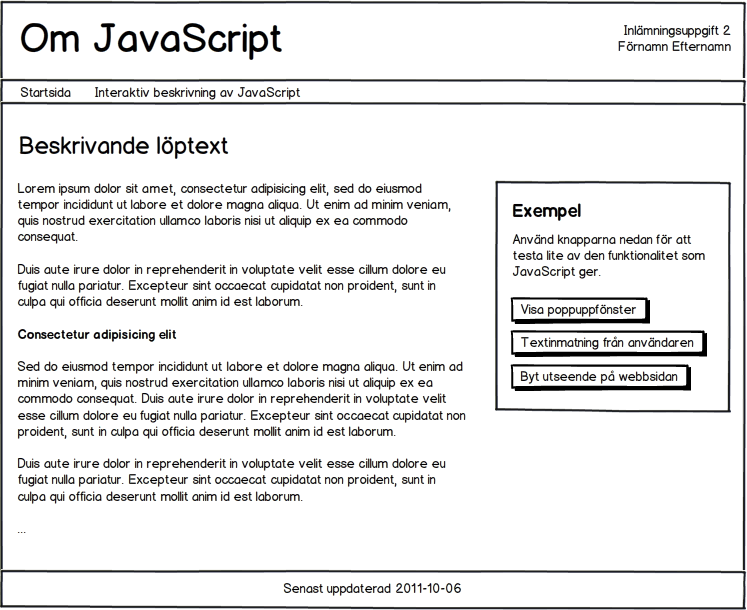

Inlämningsuppgift 2
Uppgiften går ut på att redovisa dina kunskaper kring JavaScript, liksom din förmåga att skapa en CSS-baserad layout. Detta gör du genom att lämna in ett resultat som följer specifikationerna nedan. Inlämningsuppgiften är individuell, vilket betyder att studenten enskilt ska skriva sin inlämning och kunna redogöra för alla delar av den.
Uppgiften
Du ska skapa en webbplats bestående av minst 2 webbsidor, som båda följer samma visuella utformning.

Presentationen måste följa beskrivningen/figuren nedan, men inom dessa ramar är du fri att välja utseendet. I slutet av detta dokument återfinns en mer detaljerad figur, som tydliggör vissa aspekter.
Innehåll på webbsidorna
Startsida
Målet mer startsidan är att förklara varför webbplatsen existerar. En slumpmässig internetsurfare som hittar till din webbplats bör kunna förstå detta efter att ha läst startsidan.
Saker som kan vara bra att inkludera är alltså:
- kort beskrivning av syftet med webbsida, kurs och program
- vem som står bakom
- kontaktuppgifter (e-postadress).
Interaktiv beskrivning av JavaScript
Denna webbsida (som du gärna kan döpa till något roligare…) ska dels innehålla en löptext, och dels tre körbara JavaScript-exempel.
Syftet med texten är beskriva vissa intressanta koncept som relaterar till JavaScript. Inled med en kortare beskrivning om vad JavaScript är och vad det brukar användas till. (Du kanske redan har skrivit en sådan beskrivning?) Därefter ska texten beskriva tre av följande ämnen/koncept:
- Välj en webbplats från nätet och beskriv hur JavaScript används där. (På en övergripande nivå, källkoden behöver inte studeras.)
- Vad är ett programmeringsspråk?
- Tillgänglighet och JavaScript, vad bör man tänka på? (Graceful degredation, progressive enhancement, unobtrusive JavaScript.)
- Vad är en algoritm?
- Vad är DOM, Document Object Model, och hur hänger det ihop med JavaScript?
- Vad är ett JavaScript-bibliotek (eller -ramverk) och varför används sådana?
- Två nya möjligheter med JavaScript och HTML5. Rita med
canvas, och positionering med W3C Geolocation API. (Beskriv övergripande.)
Välj de tre punkterna som intresserar dig mest och skriv minst 150 ord om var och en. För varje punkt ska du också inkludera minst en länk till en webbsida med ytterligare information.
Utöver texten ska denna webbsida också innehålla tre interaktiva exempel som visar några varianter av vad som kan göras med JavaScript. Exemplen ska aktiveras med vars en knapp, som alla ligger i ett separat område (se figur). Exemplen ska använda vissa JavaScript-funktioner:
- Visa poppuppfönster: Använd
alert()för att visa ett meddelande. - Textinmatning: Använd
prompt()- och visa inmatad text på valfritt vis (t. ex. medalert()). - Byt utseende: Ändra valfri aspekt av webbsidans utseende, t. ex. bakgrundsfärg. Detta kan göras genom att byta klass på det element som ska förändras.
Du ansvarar för att skapa den JavaScript-kod som krävs för att exemplen fungerar.
Kravspecifikation
- Webbplatsen måste följa beskrivningen ovan, avseende innehåll, visuell utformning och funktionalitet.
- Alla webbsidor ska validera enligt HTML 4.01 Strict, XHTML 1.0 Strict alternativt HTML5.
- Semantisk (X)HTML ska användas. Detta betyder att taggar ska välja, så att de i så stor grad som möjligt beskriver innehåll och struktur.
- Alla webbsidor ska använda samma stilmall(ar).
- CSS-mall(ar) ska validera enligt CSS nivå 2.1. (Enklare CSS 3 tillåts för de som vill experimentera med detta.)
- Huvuddelen (gärna all) av din JavaScript-kod ska läggas i en extern fil.
Redovisning
Ditt resultat ska publiceras på WebShare och länken till startsidan lämnas in på it’s learning. Till inlämningen ska du även bifoga en kopia på alla webbplatsens filer. Deadline är onsdag 24/10, klockan 23:55. Vid senare inlämning bedöms resultatet i samband med inlämningsuppgift 3.
Notis om individuellt genomförande
Det inlämnade resultatet ska vara skapat av dig och ska representera ditt individuellt utförda arbete. Samarbete (gemensamt skapande av resultat) är inte tillåtet.
Plagiat kan leda till anmälning för fusk enligt högskoleförordningens 10 kap om disciplinära åtgärder för studenter. Med plagiat menas kopiering/avskrift från böcker, artiklar, studentarbeten (egna eller andras), eller andra källor utan korrekt hänvisning, i syfte att få det att framstå som du själv har skapat resultatet. Såväl text som källkod kan plagieras.
Men - hittils har inget liknande skett i denna kurs!
{kind=link}